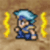
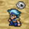
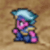
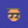
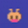

Je personages kunnen nadat ze zijn aangevallen met een bepaald type aanval, worden getroffen door de hieronder beschreven aandoeningen. Je moet deze aandoeningen snel genezen met behulp van voorwerpen of magie. Sommige aandoeningen verdwijnen weer aan het einde van een gevecht.
Aandoeningen die verdwijnen aan het einde van een gevecht
 |
“Sleep”
(slaap) |
In slaap vallen en niet kunnen bewegen. |
Te genezen met: “Esuna” (witte magie), “Alarm Clock” (wekker; voorwerp)
|
|  |
“Paralyze”
(verlammen) |
Verlamd raken en niet kunnen bewegen. |
Te genezen met: “Esuna” (witte magie), “Unicorn Horn” (hoorn van eenhoorn; voorwerp)
|
 |
“Confuse”
(verwarren) |
Zowel vrienden als vijanden aanvallen; je kunt niet zelf je strijdbesturingen kiezen.
|
Te genezen met: “Esuna” (witte magie), aangevallen worden |
|  |
“Curse”
(vervloeken) |
Vloek die zowel aanval als verdediging halveert. |
Te genezen met: “Esuna” (witte magie), “Cross” (kruis; voorwerp)
|
Aandoeningen die in stand blijven na een gevecht
|  |
 |
“Poison”
(gif) |
Gif waardoor je “HP” langzaam afneemt. |
Te genezen met: “Esuna” (witte magie), “Antidote” (tegengif; voorwerp)
|
 |
 |
“Darkness”
(duisternis) |
Duisternis die het lastig maakt om fysieke aanvallen uit te voeren. |
Te genezen met: “Esuna” (witte magie), “Eye Drops” (oogdruppels; voorwerp)
|
 |
 |
“Silence”
(stilte) |
Je kunt niet meer spreken en dus geen magische krachten gebruiken. |
Te genezen met: “Esuna” (witte magie), “Echo Herbs” (echokruiden; voorwerp)
|
 |
 |
“Pig”
(varken) |
kunt alleen de “pig” magie gebruiken. |
Te genezen met: “Pig” (varken – Zwarte magie) of “Esuna” (witte magie), “Diet Ration” (rantsoen; voorwerp)
|
 |
 |
“Toad”
(pad) |
Vermindert “Attack” en “Defense” en je kunt alleen de “toad” magie gebruiken. |
Te genezen met: “Toad” (pad - Zwarte magie) of “Esuna” (witte magie), “Maiden’s Kiss” (maagdenkus; voorwerp)
|
 |
 |
“Mini”
(minimaal) |
Vermindert “Attack” en “Defense”. |
Te genezen met: “Mini” of “Esuna” (witte magie), “Mallet” (hamer; voorwerp)
|
 |
 |
“Petrify”
(verstenen) |
Je bent in steen veranderd en kunt niet bewegen. |
Te genezen met: “Esuna” (witte magie), “Gold Needle” (gouden naald; voorwerp)
|
 |
“KO”
(knockout) |
Je raakt buiten bewustzijn als je “HP” tot 0 zakt. |
Te genezen met: “Raise” (herrijzen; witte magie), “Phoenix Down” (Feniksdons; voorwerp)
|